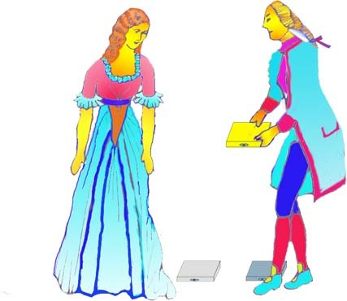
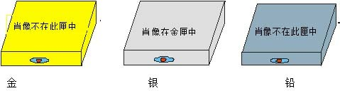
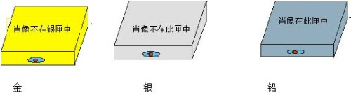
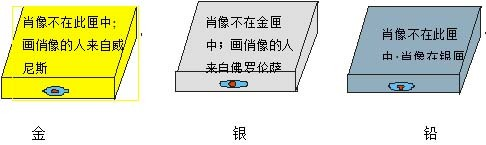
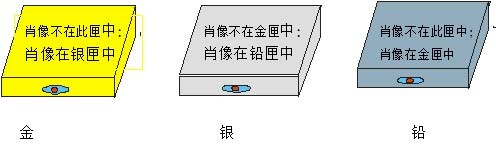
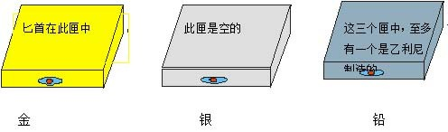
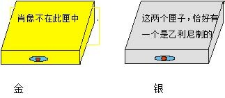
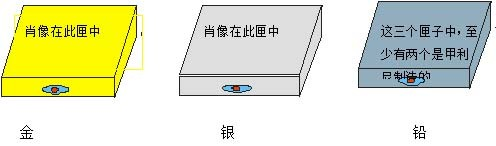

波蒂雅的肖像

图：波蒂雅以猜匣为婚，王公贵族，皆选金匣或银匣，唯有巴萨尼奥选铅箱，波蒂雅肖像果然在铅箱。
一、 威尼斯商人
1.小时候的故事
小时候听一位长辈说，她的老师在上课时讲了一个有趣的故事，故事是说：有一个热心人，他为朋友要向其未婚妻求婚，需要一笔庞大金钱（三千金币），这位热心的人自已的金钱全部投资在海外贸易，一时也筹不出钱，就硬着头皮向一位专门放高利贷的犹太人借贷，这二人平时就互相讨厌对方（犹太人讨厌热心人借钱给人从不收利息，打破行情，热心人讨厌犹太人放高利贷），没有想到这位犹太人却慷慨答应借3个月，不要利息，但言明到时候不能还钱，要割下一磅的肉抵债，热心人估计他的船3个月应会回来，就答应了。
2. 热心人的朋友拿到3000钱币
热心人的朋友拿了三千金币去向他美丽的未婚妻求婚，这位美丽的未婚妻年轻貌美有许多的王公贵族向她求婚，她遵守父亲遗言，即有金、银、铅三个箱子，里面只有一个箱放着这位美丽少女的肖像，猜中者便可娶这位少女，所有的人，除了这位热心者的朋友未试外，都未猜中。这位热心者的朋友前往求婚，当然猜中，赢得美人归。
3. 犹太人偷鸡不着蚀把米
故事这时才进入高潮，我们的热心人听说他的船在回程途中沉没了，当然到期无法还钱，这位犹太人认为是报仇的良机，当然不会错过这个机会，在法庭控告并准备割取这位热心人士的一磅肉，这时这位年轻美丽的少女担任律师出庭辩护，她很机智的说：要割一磅肉可以，但要照合约执行；刚刚好一磅，不能多，也不能少，且不能流出一滴血，否则就又要接受死刑，财产被充公。犹太人听了心寒，想拿回贷款一走了之。但这位美丽的少女继续穷追猛打，要求犹太人将全部财产一半赔偿给热心人，一半充公，最后在这位热心人的恳求下，犹太人将他财产的一半交热心人保管，犹太人死后，把这些财产交给他的女儿及女婿（也是热心人的朋友），并且死后全部遗产也赠给他的女儿及女婿。
4.追踪故事来源
我当时听了这个故事，觉得这位少女很机智，一直想要知道故事的来源，可惜从来没有人告诉我，后来有一天，我在新竹街上散步时，偶尔看到有一部电影广告标题写着：有一个商人向人借钱无力奉还，对方要向他割下一磅肉抵债，这使我回忆小时候听到的故事，可惜当时仍在求学阶段，又错过观看机会，一直到台北工作后，我从各种报章杂志看到各种片言消息，推测这个故事应该来至莎士比亚的戏剧「威尼斯商人」，但是也没有十分把握一定是，后来买了一本改写的威尼斯商人英文小说（从莎士比亚的戏剧改写），但一放就是十几年，现在要在网络写文章了，才开始读它，发现小时候听到的故事果然叫「威尼斯商人」，故事中热心人士叫安东尼奥（Antonio）；他的朋友叫巴萨尼奥 （Bassanio） ；美丽少女叫波蒂雅 (Portia)；犹太人叫夏洛克(Shylock)。三个箱子第一箱是金箱，上面写着：「谁要选我，便会得到众人希冀的东西。」；第二箱是银箱，上面写着：「谁要选我，便会得到他所应得的东西。」第三箱是铅箱，上面写着：「谁要选我，一定拿出他所有一切来冒险。」所有王公贵族都选金箱或银箱，只有巴萨尼奥选铅箱，波蒂亚肖像果然在铅箱。
二、 「波蒂雅的肖像」
「波蒂雅的肖像」取材于莎士比亚的著名喜剧 「威尼斯商人」。
在该剧中，有个非常引人入胜的情节:富家少女波蒂雅，不只姿容绝世，而 且有卓越的才能。父视去世时，给她大笔财产，因此，求婚者蜂拥而至，其中有阿拉岗亲王（The Prince of Aragon）、摩洛哥王子（The Prince of Morocco）等显赫贵族。但是，波蒂雅自己并没有择夫的自由，她的亡父在遗嘱里规定要猜匣为婚。
「猜匣为婚」这个富有戏剧性的情节，当初波蒂雅的猜匣为婚应该只是试验求婚者对财富的价值观和应用（参考前文），但后来却激发了智力设计家们的灵感，他们以奇异的思路编出许多有趣的智力题来。
「科学的美国人」杂志在世界上具有广泛的影响力。该杂志在1976年第二期 「业余数学家」刊登一序列以「波蒂雅的肖像」为题的智力题目，吸引了众多的读者。也使广大的读者领略了智力题的无穷乐趣。题目如下：
题目1：波蒂雅的择夫

假定波蒂雅不想按照他父亲的遗嘱来选择丈夫，而想以智力来择夫。她在金、银、铅三个匣，上面分别刻着一句话。三个匣子中，只有一个匣子放着波蒂雅的肖像。波蒂雅说:「这三句话，只有一句是真的。」求婚者如果透过这三句话，猜中肖像放在哪个匣子中，就嫁给他。
请问:求婚者应该选择哪一个匣子?
题目2：波蒂雅再婚

波蒂雅结婚后，确实过了一段幸福、甜蜜的日子，但却因故离了婚，离婚后，她兴起怪念头:「我的前夫选对了匣子，看起来他是有点小聪明。但那道题不算真正的难题，我可以把它设计得更难，那样，我就可以找到一个真正聪明的丈夫了。」
因此，她又设计三句话，写在三个匣子上。
波蒂雅向新的求婚者提示道:这三句话中，至少有一句是真的，且至少有一句是假的。
请问: 求婚者应该选择哪一个匣子?
题目3： 波蒂雅二世的结婚
应该是命中注定吧!求婚者有一位是她的前夫。他也的确是个天才，一下子就把这道题解出来了。
二个盖世聪明的人再次结婚了。他们终于有个女儿，波蒂雅二世。等到小波蒂雅长到荳蔻年华时，和她妈一样聪明，一样美丽。她也决定采用猜匣子的方式结婚。求婚者想娶她，非得过两道考试不可。先经过初试，初试过后再作第二道复试。
初试：

初试考法如下：
金、银、铅三个匣子，每个匣子都有两句话。
金匣子写的两句话是:肖像不在此匣中; 画俏像的人来自威尼斯。
银匣子上刻的两句话是:肖像不在金匣中；画俏像的人来自佛罗伦萨。
铅匣子上刻的两句话是:肖像不在此匣中;肖像在银匣中。
波蒂雅二世向求婚者表示:每个匣于上的两句话不会都是假的。
请问:肖像在哪个匣子中?
复试：
求婚者如果初试合格，就被领进另一间屋于，那屋子也放着三个匣子。每个匣子仍是各有两句话。波蒂雅二世提示：有一个匣子两句话都真．另一个匣子两句话都假，第三个匣子的两句话一句真一句假。
金匣子写的两句话是:肖像不在此匣中:肖像在银匣中。
银匣子写的两句话是:肖像不在金匣中:肖像在铅匣中。
铅匣子写的两句话是:肖像不在此匣中;肖像在金匣中。

请问:肖像放在哪个匣子中?
题目4：波蒂雅三世的结婚
有个英俊的求婚者两次考试都合格，高高兴兴地娶了波蒂雅二世为妻。
此后他们也过得很幸福，不久，生了一个爱女波蒂雅三世。等到她长成了少女，又与她妈和外婆一样聪明，一样美丽。她也决定采用猜匣为婚。
这回，求婚者想娶她．非得过三道考试不可了!
考法也真是独具匠心。她恢复外婆的旧计，每个匣于上只题一句话，不再题两句话。可是，耍了一个花枪。她向求婚者提示:每个匣子都是由佛罗伦萨两位著名工匠其中制造的，这二个巧匠的名字，一个叫甲利尼，一个叫乙利尼。甲利尼每打制一个匣子，总在匣子上题一句假话:而乙利尼在打制的匣子上只题真话。

初试
金匣子上刻的一句话是:匕首在此匣中；
银匣子上刻的一句话是：此匣是空的；
铅匣子上刻的一句话是:这三个匣中，至多有一个是乙利尼制造的。
波蒂雅三世不用肖像，改用匕首，她将一把匕首放在三个匣的一个中，另外两个是空的。如果求婚者能避开放匕首的匣子，就能进入复试。
请问:要避开匕首，求婚者该选哪个匣子?
复试
波蒂雅三世在复试只用了金、银两个匣子，其中一个放着肖像;这次不再用匕首。每匣子仍是由甲利尼或乙利尼制造的。
金匣子写着:肖像不在此匣中;银匣子写着:这两个匣子，恰好有一个是乙利尼制的。

问:为了找到肖像，求婚者该选哪个匣子?
关键一试
求婚者如果两次考试都合格，波蒂雅三世就会领他进另一间屋子．这间屋子里放有金匣子、银匣子、铅匣子各一个。每个匣子仍是由甲利尼或乙利尼打制的。波蒂雅三世把她自己的肖像放在一个匣子裹。要过这道考试，求婚者必须做到:选出放着肖像的匣子:说出每个匣子的制造者。
金匣子上刻的一句话是:肖像在此匣中;
银匣子上刻的一句话是:肖像在此匣中;
铅匣子上刻的一句话是:这三个匣子中，至少有两个是甲利尼制造的。
金 银 铅 肖像在此匣中 肖像在此匣中 这三个匣子中，至少有两个是甲利尼制造的

请问：如果你是求婚者，打算怎么解?
答案
题目1：铅匣
本题中，求婚者应该选择铅匣子，也就是说，肖像一定在铅匣中，理由是，金匣子上写着:「肖像不在此匣中」，而银匣子却写着:「肖像在金匣中」，这两句话是矛盾的，两个互相矛盾的东西，不能同假，也不能同真，其中必有一真，又因已知三句话中只有一句是真的。因此，我们可以断定三句话中惟一的一句真话，不是金匣是真的，就是银匣是真的。铅匣的话应该是假话。而铅匣上写着「肖像不在此匣中。」既然这句话是假的，那么，肖像就一定在此匣了。
题目2：金匣
假设:肖像果真在铅匣子中，证明金、银匣子上的话是对的，因此三句话就全都是真的，这就违背设定条件。因此铅匣子的话是假的，且肖像不在铅匣子中。
假设:肖像在银匣子中，那么，金匣子的话（肖像不在银匣子中）及铅匣子的话（肖像在此匣子中）是假的，也就是说三句话就全都是假的，又违背设定条件。
所以，肖像只能在金匣里。假设肖像在金匣中，结果，则金匣与银匣的话是真的，铅匣是假话，这与设定条件一致，因此肖像金匣里。
答题3
初试答案 银匣
铅匣子可以先排除，因为假如肖像在铅匣子里，那么，它上面写的两句话都成了假的了。（与假设条件不符）
因此，肖像不是在金匣子中，就是在银匣子中。
可是，金匣子上的前一句话（肖像不在此匣子中）和银匣子上的前一句话（肖像不在金匣子中）内容是相同的，都讲肖像不在金匣子中。那么，它们要么都是真的，要么都是假的。
依假设条件，假设这后两句话都是假的，那么，金匣子与银匣子的第二句话便都是真的。但是，这是不可能的，因为因为画像的人只有一个，不是来自威尼斯就是来自佛罗伦萨，它们不可能同真。因此，这个假设不能成立。所以，金匣子和银匣子上的两句话都是真的，也就是说肖像不在金匣子中。因此，可以断定肖像在银匣子中。
复试答案：铅匣
假设肖像在金匣子中，那么，金匣子与银匣子的两句话都是假的。与假设只有一个匣子二句话是假的，相违背。
假设肖像在银匣子中，银匣子与铅匣子上就各有一句真话（肖像不在金匣子、肖像不在此匣中），且各有一句话是假的（肖像在铅匣子、肖像在金匣子），这又同假设条件不符。
所以．肖像是在铅匣中。
如此可推，银匣子上有两句真话，铅匣子上有雨句假话．金匣子上一真-假。
答题4
初试答案：铅匣
先讨论铅匣子是谁制造的？
假设铅匣子是乙利尼造的。如果这样，它上面的二句话全部是真的（都是乙利尼说的），因此，另外两个匣子是甲利尼造的（金、银匣子上面的话是假的）。因此，金匣子申不藏匕首，匕首在银匣子中。因此，如果铅匣子出乙利尼之手，匕首藏在银匣子中。
假设:铅匣子是甲利尼造的。它上面的话就是假的，因此乙应该至少有造了两个匣子。也就是说金、银二个匣子都是乙利尼造的 ，铅匣子是甲利尼造的。既然如此，金匣子与银匣子的话都是真的。在这种情形下，匕首是在金匣子中。
不管是什么情况．匕首不会藏在铅匣中。所以，求婚者该选铅匣子。
复试答案
假设银匣子是乙利尼打制的，因为乙利尼的说是真的，在这种情况下，金匣子就是甲利尼打的。则肖像在金匣子中。
假设银匣子是甲利尼打制的。则恰好有一个匣子是乙利尼打的，就不合命题条件。这等于说，金匣子也是甲利尼打制的，所以金匣子的话是假的，都。也就是说肖像是在金匣子中。
关键一试答案：铅匣
先证明铅匣子是乙利尼制造的。
假设铅匣子是甲利尼造的，如果这样，那么它上面的话就是假的。这意味着至少有两个是甲利尼制的，不对，也就是说乙利尼造了另外二个（金匣子与银匣子）。但是，这是不可能的，因为肖像不会同时存在金匣子及银匣子中。由此可见，铅匣子只能是乙利尼造的。因此，它上面的话是真的。甲利尼打造了两个匣子（金匣子与银匣子）。又，因为它们上面的话都是假的。肖像既不在金匣子中不在银匣子中，所以，肖像是在铅匣子里。